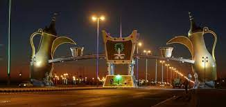

Wadi Ad Dawasir
Location
Wadi Ad Dawasir is bordered to the north by Al Quwaiiyah Province, to the south by the Najran Region, to the east by Al-Sulayyil Province and Al-Aflaj Province, and to the west by the Asir Region and the Makkah Region. The area of Wadi Ad Dawasir is approximately 48,900 square kilometers. In the past, the valley was traversed by flowing streams, sloping from the west to the east, including the flow of Wadi Tathlith, Wadi Ranya, and Wadi Bisha.
Climate
Wadi Ad Dawasir experiences a desert climate, characterized by high temperatures and low precipitation. Temperatures range from 5 degrees Celsius in winter to 45 degrees Celsius in the summer season.